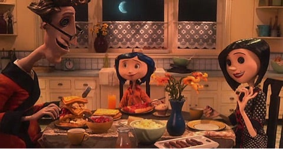
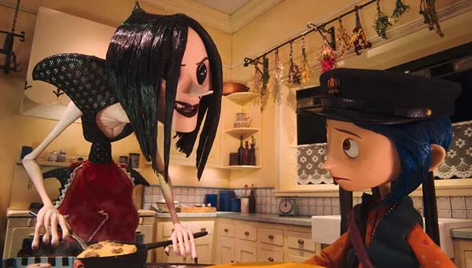
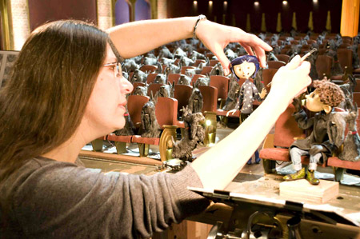
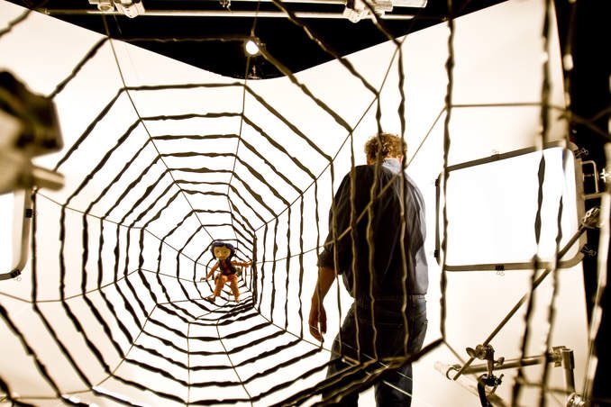

コラライン：主人公。ピンクパレスアパートに引っ越してきた好奇心がとても強い女の子。
ママ：コララインの母親。泥が嫌い。園芸雑誌のライター。
パパ：コララインの父親。料理が得意だがスライム状のものばかり。ままと同じく園芸雑誌のライター。
黒ネコ：もう一人の主人公。"ドアの向こうの世界"では人語を話す。
ワイビー（ワイボーン）：コララインを脅かしたり怖い話をしたり、意地と口が悪い少年。
エイプリル・スピンク：ピンクパレスアパートの半地下に住む元女優のイギリス人。おっとりしていて、お茶の葉占いが得意。
ミリアル・フォーシブル：ミス・スピンクとコンビを組む、元女優のイギリス人。ミス・スピンクと反対のことを言う。
ボビンスキー：ピンクパレスアパートの二階に住む風変わりなロシア人。ドビネズミのサーカスを訓練中。腕と足が異常なほど長いが、体がとても柔軟である。
ボタンの魔女：封印されていた小さなドアの中に存在する"別の世界"の住人。コララインの目をボタンにするため"別のママ"に姿を変え、欲しがっているものを与え誘惑する。自分の思い通りにならないと凶暴になる一面も。
"別のパパ"："別の世界"の住人。コララインのために美しい庭を造り上げる。コララインに好意的だが魔女には逆らえない。
"別のワイビー"："別の世界"の住人。コララインに対し親しげであり、話すことはできない。
"別のボビンスキー"："別の世界"の住人。ドビネズミのサーカスを率いる団長。
"別のミス・スピンク＆ミス・フォーシブル"："別の世界"の住人。老婆の着ぐるみを脱ぎ捨て、女優に戻り、劇場と化した半地下でテリア犬たちを相手に曲芸を行う。
幽霊の子供たち：かつてボタンの魔女にだまされ、目と魂を奪われてしまった子供たちの幽霊。目を"現実の世界"へ戻さなければ解放されない。
ピンクパレスアパートに引っ越してきた少女コラライン。しかし、両親は多忙な仕事で、かまってもらえず、友人もできない退屈で孤独な日々を送っていた。そんなある日コララインは、壁に封印された小さなドアを見つけた。ドアを開けて中に入ると、そこは目がボタンの"別の両親"が住むどんな願いもかなう夢の世界だった。コララインは、この世界をすっかり気に入るが、この世界で暮らすには、目をボタンにしなければならないのだ。
 このようにいろいろな顔を作り、一動きづつ撮影しています。
 